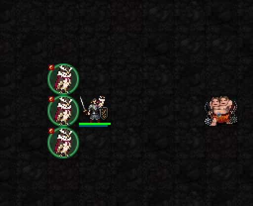

발동 → 6마리 군세 → 종료 · 실제 게임
기존 세 마리에서 발동해 여섯 마리로 늘어나는 장면입니다. 흰 깃·금빛 표식이 군세 활성 상태를 나타냅니다.

작은 군세 표식
추가 소환에 필요한 빈 바닥이 있어야 최대 여섯 마리가 됩니다. 이 테스트에서는 종료 뒤 기존 세 마리가 남고 추가 세 마리는 사라집니다. 기존 간모의 원래 수명이 끝났다면 더 적게 남을 수 있습니다.
간모를 최대 6마리까지 보충하고, 군세 전체에 보호막·회피·이동속도 강화
해금: 신앙 ★★★★★120 · 최소 기도술 제한 없음
비용: MP7 · 신앙14 · 행동 1턴
종료 후 재사용 대기: 15턴
기존 세 마리에서 발동해 여섯 마리로 늘어나는 장면입니다. 흰 깃·금빛 표식이 군세 활성 상태를 나타냅니다.

작은 군세 표식
추가 소환에 필요한 빈 바닥이 있어야 최대 여섯 마리가 됩니다. 이 테스트에서는 종료 뒤 기존 세 마리가 남고 추가 세 마리는 사라집니다. 기존 간모의 원래 수명이 끝났다면 더 적게 남을 수 있습니다.
| 항목 | 효과 |
|---|---|
| 시전 완료 후 지속 | 6+0.2I턴 → 8.4턴 |
| 소환 한도 | 기본 3마리 → 군세 중 6마리 |
| 보호막 | 간모마다 6+⌊I/3⌋ → 피해10 흡수 플레이어에게 주는 보호막은 아닙니다. |
| 회피 EV | +4 → I12에서 18→22 |
| 이동 | 0.8턴 → 0.6턴 |
| 일반 공격 간격 | 1턴 유지 · 공격속도 증가는 없음 |
| 종료 | 보호막·회피·이동 강화 종료 추가 간모 소멸, 기존 간모는 남은 원래 수명에 따름 |
3성과 구분: 3성은 적 하나에 즉시 집중 공격을 지시하고, 5성은 군세 수와 생존력·기동력을 강화합니다. 5성 사용 자체가 3성 지휘를 무료로 발동하는 것은 아닙니다.
실제 22신 기능·새 프로세스 복원 검사 통과. 전투 수치는 유지하고 5성 표식만 작게 교체했습니다.
확정된 3성 사냥 지휘 보기 · 확정된 1성·두 발 공격 보기
현재 5성 검토 중. 전체 22신 시각 작업 이후 중간 패시브/최종 성급 배치는 별도 재검토합니다.